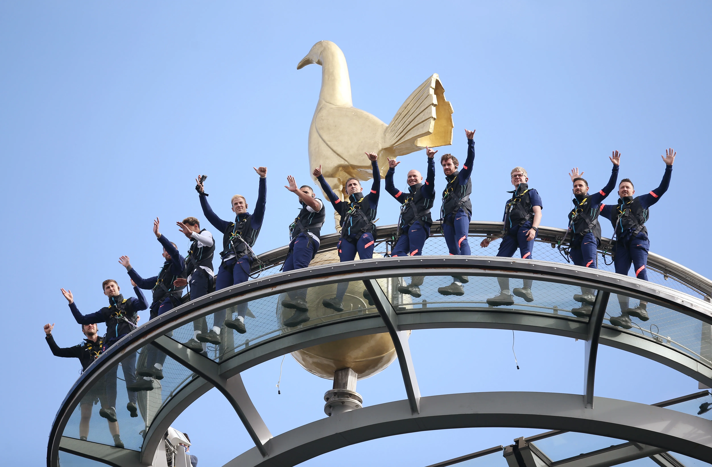
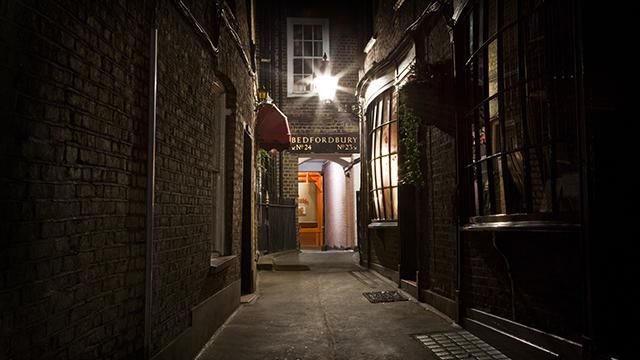
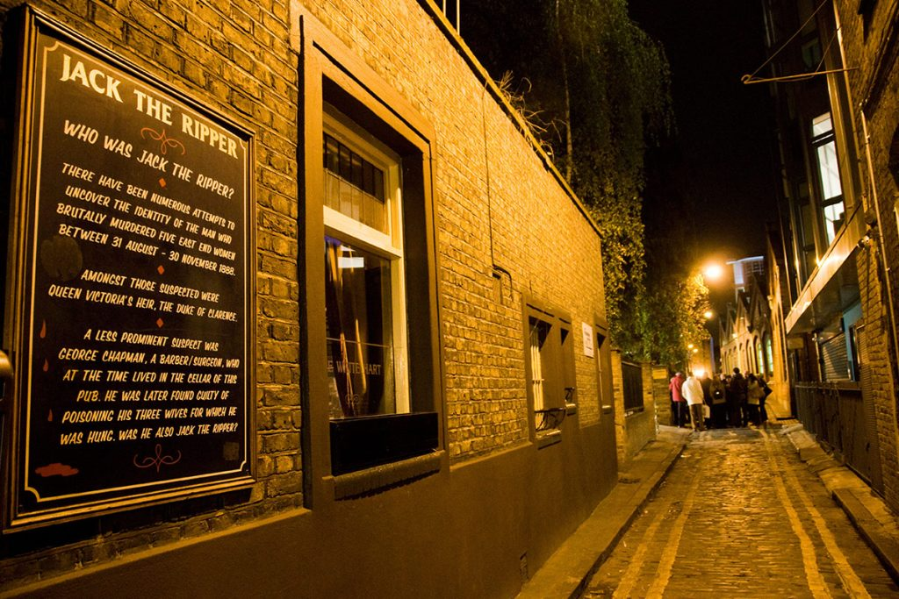

EXPLORE LONDON
GUIDE TO ENJOYING YOUR VISIT ACROSS THE POND
Live on the Wildside: Go On Unique Adventures in London
|  |

|
|---|
Traditional tourist attractions are all good and fun, but we know that there are some people that want even more. Perhaps, something unusual, exciting, and even a little bit scary. Luckily, London has plenty of thrilling escapades for people to try out.
Jack The Ripper Walking Tour
Address: 88 Whitechapel High St, London E1 7RA, United Kingdom
The Jack the Rippper Walking Tour that details the chilling crime of the famous unmasked serial killer that made his way through the dark streets and alleyways of London in 1888. The tour begins on Whitechapel High Street and ends at Spitalfields. Guests are guided down a series of dark streets and pinpoint the exact location of five of Jack the Ripper's murders, two of the most infamous ones being that of Elizabeth Stride and Catherine Eddowes. There, they will hear about victim testimonies, evidence surrounding each case, and theories that try to uncover who Jack the Ripper really was. A tour of this nature shines a light on some of the more dark and somber aspects of London's history.
How Much Do Tickets Cost?
Guests can purchase tickets for the tour starting at £15.00 via the official Jack the Ripper Walking Tour website so they can find a time and date that works best for them.
What Time Do The Tours Happen?
The selected public tours start at 7:00pm, and they usually last for about 1 hour and 30 minutes. It is important to arrive at your time slot at least 15-20 minutes before the tour is scheduled to start.
Can Children Come on the Tour?
It is generally discouraged for children to come on the walking tour. This is due to the nature of the cases and the fact that they all contain details that are graphic and disturbing, which can be scary and distressing for children. That being said, children over the age of 12 are allowed to go on the tour, but it is simply advised for parents to use discretion to determine whether or not their child will be able to handle it.
Are People Allowed to Take Photographs?
Yes, photography is allowed along the tour route. Because the tour takes place at night, the atmosphereic dark streets create an mysterious look among the different historical sites, which visitors love to capture in their photos. That being said, because of the natuure of the crimes committed in each location, it is important for tourists to maintain respect while passing through.
Does the Tour Involve Entering the Buildings?
No, tourists do not go inside any of the sites marked along the tour. Because the Jack the Ripper tour is an outdoor tour, tourists will be guided in front of each building and be presented with a series of background information involving each spot.
The Dare Skywalk
Address: Tottenham Hotspur Stadium, London N17 0BX, United Kingdom
The Dare Skywalk provides tourists with an exhilerating aerial view of the city. This experience takes place 46 meters off the ground, and participants make their way on a glass walkway. From these heights, they are able to get a completely panoramic view of some of London's most iconic landmarks such as Canary Wharf, the River Thames, and the Shard. There is no need for guests to feel uneasy being so high in the sky because these tours are guided by highly trained professionals. Additionally, they are provided with all of the necessary safety gear for the climb. For those who are feeling extremely daring, the Dare Skywalk provides opportunities where they can skydive from the top down to the bottom.
Is Climbing Experience Needed to Participate?
People do not need to have any type of climbing experience to visit and participate at the Dare Skywalk. Participants can be as young as 8-years-old and is doable for all despite their level of fitness.
How Long Does the Dare Skywalk Experience Take?
The entire session lasts for about 90 minutes. Before visitors climb to the top, they must participate in a safety session to understand what they and the instructor needs to do in case of an emergency. The walking part of the tour takes around 45 minutes, but this can vary depending on the weather conditions, pace of the entire group, and any other outside circumstances that may arise during the climb.
Where Can Tickets Be Purchased?
Visitors can purchase tickets in advance at the official Tottenham Hotspur Stadium website to find a time and date that works best for them.
| Category | Price |
|---|---|
| Child | £31.00 |
| Adult | £39.00 |
It is important to note that ticket prices may vary slightly depending on the date and time.
The Dare Skywalk Hours
| Weekday | Hours |
|---|---|
| Monday | 10:30am-5:00pm |
| Tuesday | 10:30am-5:00pm |
| Wednesday | 10:30am-5:00pm |
| Thursday | 10:30am-5:00pm |
| Friday | 10:30am-5:00pm |
| Saturday | 10:30am-7:30pm |
| Sunday | 10:30am-3:00pm |
What Should People Wear to the Dare Skywalk?
It is highly recommended that guests wear shoes that are comfortable and made for walking for long periods of time. Because the walk takes place so far off the ground, guests should also dress appropriately for the weather by wearing long pants and a sweatshirt or jacket of sorts. Clothing items like skirts, sandals, or heeled shoes should be avoided.
TeamSport (West London)
Address: 20 Allied Way, London W3 0RF, United Kingdom

The TeamSport provides guests with an exillerating go karting experience through their multi-level race track. Racers will test their abilities by zipping around tight corners and elevated pathways to see who will be able to get the fastest race time. Participants can race individually or they can race with others in time trials. The karts move very quickly at 40 miles per hour, making for an adrenaline-boosting experience. The track has banked corners, making it ideal for beginngers and seasoned drivers. This competitive space is perfect for planned events or just a fun afternoon out in the city. Family, friends, and colleagues alike always have a fantastic time during their visit.
Where Can Tickets Be Purchased?
To buy tickets, guests should visit the official TeamSport website. There, they can pick a time, date, and choose the age groups of the participants that will be in attendance. There are also different packages that people can choose from.
What Should People Wear For Go Karting?
It is important for all participants to wear closed-toe shoes that are comfortable. Any guests with open-toe shoes will not be allowed to race. All the necessary safety gear such as a helmet and padding are provided by TeamSport.
TeamSport Go Karting Hours
| Weekday | Hours |
|---|---|
| Monday | 9:00am-11:00pm |
| Tuesday | 9:00am-11:00pm |
| Wednesday | 9:00am-11:00pm |
| Thursday | 9:00am-11:00pm |
| Friday | 9:00am-11:00pm |
| Saturday | 9:00am-11:00pm |
| Sunday | 9:00am-11:00pm |
How Long Do The Races Last?
The length of the race is entirely dependent on the package that was purchased. On average, a racing session can take anywhere between 15 to 30 minutes, but certain racing sessions can take longer than that.
Can TeamSport Go Karting Be Booked For Private Events?
Yes, TeamSports hosts a number of diffent private events throughout the year. They do events such as office gatherings, birthdays, and other special events. In these situations, packages can be customized so that they accomodate for extra things such as catering for food and additional racing time.
The Crystal Maze LIVE Experience
Address: 22 - 32 Shaftesbury Ave, London W1D 7EU, United Kingdom
Based on the popular TV show from the 90s, the Crystal Maze LIVE Experience gives guests the opportunity to feel as though they are actually participating in the show. They are guided by a Maze Master and must travel through the four time zones: Aztec, Industrial, Medieval, and Futuristic. As they travel through time, they will endue a series of timed mental and physical challenges that they must complete to progress through the game by collecting crystals. This vibrant experience is perfect for groups of families or friends as it is a very team-oriented activity. Even if people have never seen the show before, this experience serves as the perfect opportunity to be exposed to something new that tests their mental fortitude and agility.
How Many People Can Participate in The Crystal LIVE Experience?
The challenges are designed to handle groups of 4 to 8 people. If the number of people in attendance is greater than that, the big group with be split into multiple smaller groups that will tackle the challenges in opposite directions.
Can Children Participate in The Crystal LIVE Experience?
Yes, children above the age of 9-years-old are allowed to join in on the fun at the Crystal LIVE Experience. That being said, all those who are under the age of 16-years-old must be accompanied by the parent as most of the challenges are typically designed for older participants.
The Crystal Maze LIVE Experience Hours
| Weekday | Hours |
|---|---|
| Monday | 1:00pm-9:00pm |
| Tuesday | 1:00pm-9:00pm |
| Wednesday | 1:00pm-9:00pm |
| Thursday | 1:00pm-9:00pm |
| Friday | 1:00pm-9:00pm |
| Saturday | 9:00am-9:00pm |
| Sunday | 9:00am-9:00pm |
Do Tickets Need To Be Purchased In Advance?
Because the Crystal LIVE Experience is a very busy attraction, tickets must be booked well in advance. To purchase them, guests can visit The Crystal LIVE Experience website to find a time, date, and package that works best for them.
How Should People Dress for The Crystal LIVE Experience?
There will be a great deal of physical activity such as climbing and running, so participants should dress with that in mind. Simple items such as tennis shoes, sweatpants, jeans, tshirts, and sweatshirts should be just fine. Uncomfortable clothing items such as heels and tight clothing should generally be avoided because it can restrict movement.